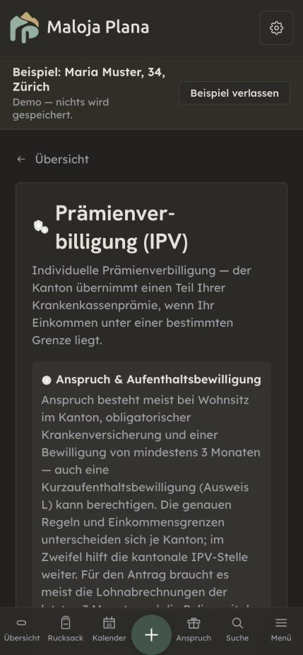
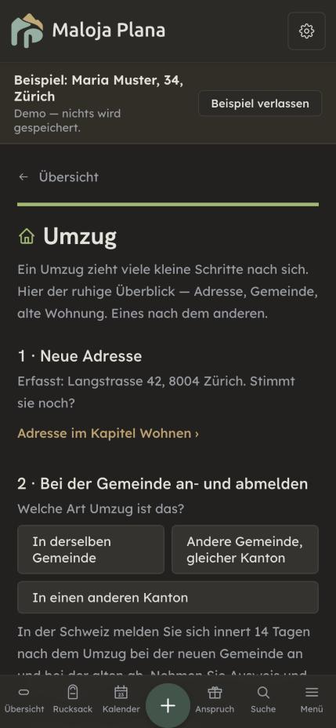
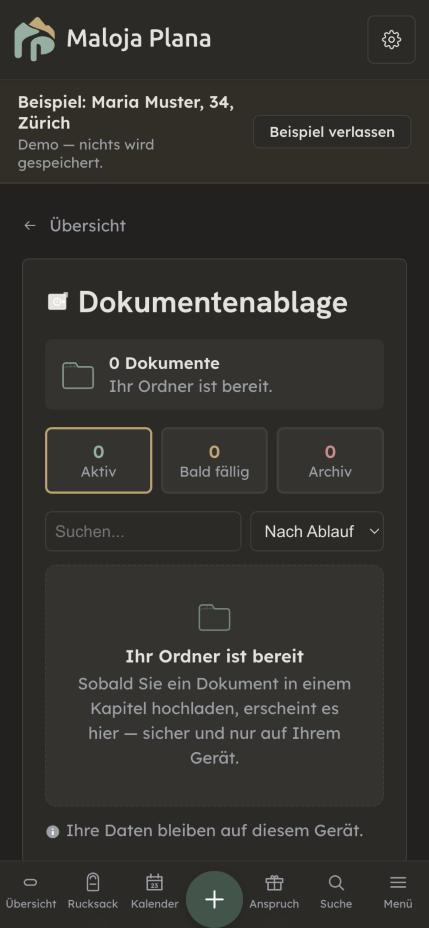

Vier Seitenarten stehen für alle 92 Seiten: Kapitel, Rechner, Ablauf, Ablage. Links der heutige Stand (Demo «Maria Muster», 23.10.2026), rechts der Vorschlag. Nur Entwurf, nichts gebaut.
Was für alle Seiten gilt
Ein Ort statt einer Karte: oben ein schmales Band der Passstrasse, darunter steht die Seite direkt auf dem Grund. Kein Kasten im Kasten mehr.
Der gleiche Kopf überall: Brotkrume, Kapitel-Icon auf getönter Fläche, Titel, ein Satz, worum es geht.
Ein Objekt je Seite: die eine Zahl, der eine Schritt, die eine Handlung — gross. Alles andere tritt zurück.
Lange Texte zum Aufklappen: was heute als Textblock dasteht, wird zu ruhigen Zeilen mit «+».
Desktop nutzt die Breite: links Kopf und Objekt (bleiben stehen), rechts der Inhalt.
A · Kapitel — «Finanzen & Geld»
Heute: zentrierter Kopf mit Münze, kursiver Satz, darunter Kasten in Kasten. Vorschlag: die Zahl, die schon dasteht («Es bleiben CHF 2'480»), wird das Objekt der Seite; die Felder werden zu Gruppen.
Heute
Vorschlag
Maloja Plana
‹ Übersicht · Kapitel
Finanzen & Geld
Ihr Einkommen, Erspartes und Bankdaten — ein klares Bild für Budget, Steuern und Anträge.
Jeden Monat
Es bleiben CHF 2'480
Ausgaben 3'720Einkommen 6'200
EinkommenKantonsspital Zürich · CHF 6'200 netto›
AusgabenCHF 3'720 erfasst›
Erspartes & VorsorgeSäule 3a, Konten›
Bank & ZahlungenKonten, Daueraufträge›
Je nach Einkommen ist eine Prämienverbilligung möglich. Prüfen ›
Die Zahlen sind die der Demo (6'200 / 3'720 / 2'480). Die vier Gruppen sind ein Vorschlag, wie sich die heutigen Felder ordnen liessen — die echte Einteilung kommt aus dem Kapitel.
Der Hinweis auf die Prämienverbilligung bleibt, aber als ruhige Zeile statt als farbiger Kasten.
B · Rechner — «Prämienverbilligung (IPV)»
Heute beginnt die Seite mit einem langen Textblock zu den Anspruchsregeln; das Ergebnis kommt weit unten. Vorschlag: zuerst die eigene Lage (aus dem Profil, änderbar), dann das Ergebnis als Objekt, die Regeln zum Aufklappen.
Heute

Vorschlag
Maloja Plana
‹ Übersicht · Werkzeuge
Prämienverbilligung (IPV)
Der Kanton übernimmt einen Teil Ihrer Krankenkassenprämie, wenn Ihr Einkommen unter einer Grenze liegt.
Ihre Lage
Kanton Zürich1 Personnetto CHF 6'200 / Monat
Ergebnis
CHF — im Jahr
Hier steht, was der Rechner heute schon ausgibt. Im Mockup bewusst ohne Zahl.
Wer hat Anspruch?
Anspruch besteht meist bei Wohnsitz im Kanton, obligatorischer Krankenversicherung und einer Bewilligung von mindestens 3 Monaten — auch eine Kurzaufenthaltsbewilligung (Ausweis L) kann berechtigen.
Was brauche ich für den Antrag?
Meist die Lohnabrechnungen der letzten Monate und die Police der Krankenkasse.
Wo stelle ich den Antrag?
Bei der kantonalen IPV-Stelle.
Die genauen Regeln und Grenzen unterscheiden sich je Kanton. Offizielle Stelle ›
Die Texte der Aufklapp-Zeilen sind aus dem heutigen Textblock genommen und nur aufgeteilt, nicht umgeschrieben. Vor dem Bau prüft der Swiss-Precision-Prüfer jede Aussage.
«Ihre Lage» füllt sich aus dem Profil — auf gleicher Basis (netto, ×12), wie es eure Regel verlangt.
C · Ablauf — «Umzug»
Heute: nummerierte Abschnitte untereinander, alles offen. Vorschlag: der Ablauf als Weg mit Stationen wie auf der Passstrasse. Der aktuelle Schritt ist gross und offen, erledigte werden klein.
Heute

Vorschlag
Maloja Plana
‹ Übersicht · Abläufe
Umzug
Ein Umzug zieht viele kleine Schritte nach sich. Eines nach dem anderen.
Schritt 2 von 3
✓
Neue Adresse
Langstrasse 42, 8004 Zürich
2
Bei der Gemeinde an- und abmelden
Welche Art Umzug ist das?
In der Schweiz melden Sie sich innert 14 Tagen nach dem Umzug bei der neuen Gemeinde an und bei der alten ab.
3
Alte Wohnung
Übergabe, Kündigung, Kaution
Die drei Schritte folgen der heutigen Einleitung («Adresse, Gemeinde, alte Wohnung»). Texte von Schritt 1 und 2 sind wörtlich übernommen; die Unterzeile von Schritt 3 ist ein Platzhalter.
Das gleiche Muster passt auf alle rund 30 Abläufe (Heirat, Stelle verloren, Todesfall …), weil sie heute schon nummerierte Schritte haben.
D · Ablage — «Dokumentenablage»
Heute: drei Zähler mit 0, Suche und Sortierung, obwohl noch nichts drin ist, dazu der leere Zustand im Kasten. Vorschlag: solange leer, nur der leere Zustand mit einer Handlung. Zähler, Suche und Sortierung kommen erst, wenn es etwas zu zählen gibt.
Heute

Vorschlag
Maloja Plana
‹ Übersicht · Unterlagen
Dokumentenablage
Ausweise, Verträge, Belege — an einem Ort, nur auf Ihrem Gerät.
Ihr Ordner ist bereit
Sobald Sie ein Dokument in einem Kapitel hochladen, erscheint es hier — sicher und nur auf Ihrem Gerät.
Ihre Daten bleiben auf diesem Gerät.
Texte wörtlich von heute. Neu ist nur der Knopf «Erstes Dokument ablegen» — heute muss man dafür in ein Kapitel wechseln; ob der Knopf direkt hochlädt oder ins Kapitel führt, ist ein Entscheid.
Das Muster «leer = nur eine Handlung» passt auch auf Merkliste, Kalender und Briefe.